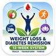

DIABETES & BLOOD PRESSUREWeight loss and stress reduction don't just help your blood sugar — they help bring blood pressure down too, since both conditions share the same underlying drivers. This course's free tracker logs sugar, weight, and blood pressure in one place, so you can actually see that connection in your own numbers.
See the Course on Udemy →Dr. Mehul Upadhyay has spent 15+ years working inside hospital operations and healthcare quality management — including time in the New Zealand healthcare system. This course applies that same structured, evidence-based thinking to treating diabetes and blood pressure as connected, not as two unrelated conditions needing two unrelated plans.
15+ Years Healthcare Ops International Hospital ExperienceNo. This course does not advise on starting, stopping, or changing any medication. Always make medication decisions with your doctor.
No — it's a simple logging tool to help you and your doctor see patterns in your own readings over time. It is not a diagnostic or medical device.
No. This is structure and knowledge to have better conversations with your doctor — never a replacement for medical advice.
12-week plan · Lifetime access · Learn at your own pace
Start the Course on Udemy →